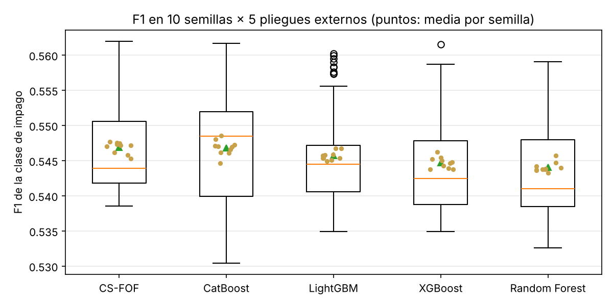
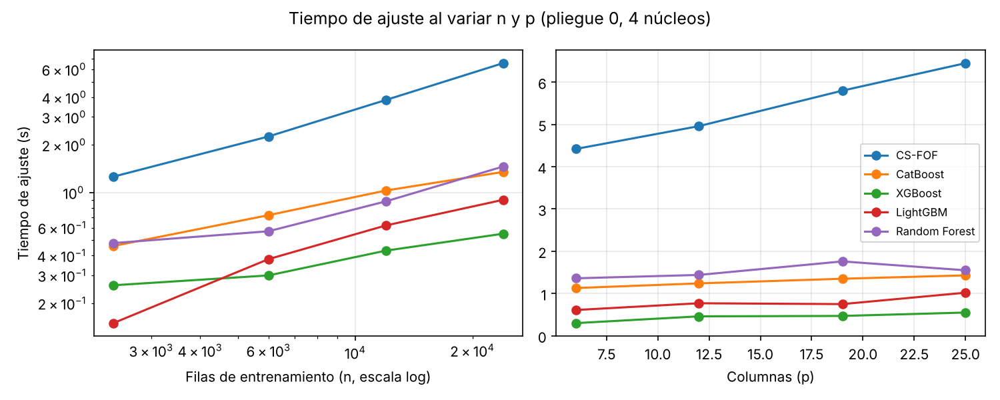
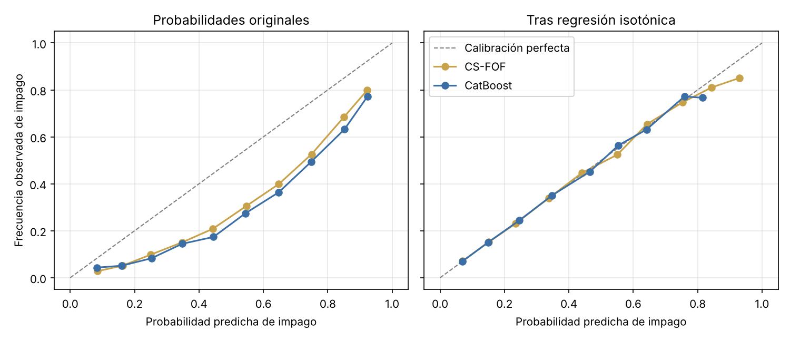

Evaluación ampliada: ablación, robustez y limitaciones#
Ablación y sensibilidad (pruebas de diseño)#
Las variantes se evaluaron solo con el entrenamiento del pliegue externo 1, con validación interna
estratificada de 3 pliegues, sin usar ningún pliegue de prueba (experiments/cs_fof_diseno/).
Variante |
F1 |
Lectura |
|---|---|---|
CS-FOF base (un candidato oblicuo, \(q=\sqrt p\), \(d=10\), \(h=20\)) |
0.5493 |
Referencia |
Sin corte oblicuo (ablación) |
0.5452 |
El corte oblicuo aporta +0.004 |
Oblicuo con \(p/2\) variables |
0.5449 |
Un corte más fuerte sobreajusta |
Dos candidatos oblicuos por nodo |
0.5482 |
Sin mejora |
Más profundo (\(d=14\), \(h=10\)) |
0.5238 |
Sobreajuste claro |
128 bins |
0.5458 |
Sin mejora |
Random Forest / XGBoost (mejores hiperparámetros del pliegue 1) |
0.5450 / 0.5412 |
Referencias |
Las variantes de regularización (profundidad 8 a 12, hoja mínima 20 a 40, \(\varepsilon\) entre 0.01 y
0.5, sqrt o log2, 150 o 300 árboles) quedaron todas entre 0.546 y 0.550: el modelo no depende de
un ajuste fino de sus hiperparámetros, una señal de estabilidad frente al sobreajuste.
Estabilidad entre pliegues#
En la validación anidada 5 × 5, CS-FOF tiene la menor desviación estándar del F1 entre los cinco mejores modelos (0.0054, frente a 0.0077–0.0091 de CatBoost, XGBoost, LightGBM y Random Forest), y sus cuatro métodos de búsqueda dan resultados cercanos (0.5456 a 0.5479).
Conjuntos de datos adicionales#
Para comprobar la consistencia, los 10 modelos se evaluaron en tres conjuntos de crédito del repositorio
UCI con el mismo procedimiento: validación anidada 5 × 5, class_weight y búsqueda aleatoria de 25
configuraciones (src/run_additional_datasets.py).
Modelo |
Taiwán |
German (1 000; 30 %) |
Australian (690; 56 %) |
Polish año 1 (7 027; 4 %) |
Rango medio |
|---|---|---|---|---|---|
CatBoost |
0.548 |
0.605 |
0.878 |
0.733 |
1.25 |
XGBoost |
0.547 |
0.599 |
0.880 |
0.682 |
2.75 |
CS-FOF |
0.548 |
0.589 |
0.874 |
0.430 |
4.75 |
Random Forest |
0.545 |
0.600 |
0.874 |
0.446 |
4.75 |
LightGBM |
0.546 |
0.575 |
0.874 |
0.658 |
4.75 |
SVM |
0.539 |
0.601 |
0.862 |
0.167 |
5.75 |
KNN |
0.526 |
0.560 |
0.877 |
0.138 |
6.75 |
Regresión logística |
0.518 |
0.600 |
0.872 |
0.130 |
7.00 |
Árbol de decisión |
0.525 |
0.521 |
0.860 |
0.429 |
8.25 |
Naive Bayes |
0.499 |
0.591 |
0.837 |
0.074 |
9.00 |
La prueba de Friedman con la corrección de Iman–Davenport rechaza la igualdad de los 10 modelos en los 4 conjuntos (\(F=4.38\), \(p=0.0013\)), con CatBoost en el primer lugar. Ninguna comparación de CS-FOF con Wilcoxon y Holm es significativa (con 4 conjuntos el p mínimo es 0.125). Lectura por conjunto:
German: CS-FOF tiene el mayor AUC-ROC de los 10 (0.790) y un AUC-PR de 0.627, pero su F1 a umbral 0.5 queda en el puesto 7 (0.589).
Australian: todos los modelos basados en árboles quedan dentro de 0.006 en F1; CS-FOF es cuarto.
Polish: con 4 % de quiebras y razones financieras de colas muy pesadas, los tres métodos de boosting superan con amplitud a los dos bosques (CatBoost 0.733 frente a CS-FOF 0.430 y Random Forest 0.446). El boosting corrige iterativamente los casos raros mal clasificados, mientras que el promedio de árboles independientes los diluye; la ponderación por costo de CS-FOF no basta para compensarlo.
CS-FOF no es consistentemente superior en los conjuntos adicionales. Su desempeño es equivalente al de Random Forest, el modelo del que parte, y queda por detrás de CatBoost y XGBoost cuando el desbalance es extremo.
Robustez#
Estudios exploratorios (no estaban en el protocolo original) sobre los cinco mejores modelos en
Taiwán (experiments/robustez/robustez.py). Para no hacer una búsqueda nueva, cada modelo usa los
hiperparámetros que eligió en cada pliegue externo; el ruido y el submuestreo se aplican solo al
entrenamiento, y la prueba siempre es limpia y completa. Son 5 pliegues por nivel, sin pruebas de
hipótesis, así que las diferencias pequeñas deben leerse con cautela.
Ruido en las etiquetas. Se invierte al azar una fracción de las etiquetas de entrenamiento (la misma para todos los modelos).
Modelo |
0 % |
5 % |
10 % |
20 % |
|---|---|---|---|---|
CS-FOF |
0.5483 |
0.5455 |
0.5455 |
0.5336 |
CatBoost |
0.5471 |
0.5469 |
0.5416 |
0.5301 |
XGBoost |
0.5448 |
0.5430 |
0.5401 |
0.5252 |
LightGBM |
0.5459 |
0.5443 |
0.5408 |
0.5304 |
Random Forest |
0.5434 |
0.5423 |
0.5414 |
0.5303 |
Todos pierden entre 0.013 y 0.020 de F1 con 20 % de ruido. CS-FOF tiene el mayor F1 en tres de los cuatro niveles y pierde menos que los tres métodos de boosting (−0.015 frente a −0.016 a −0.020); Random Forest es el que menos pierde (−0.013).
Tamaño de la muestra. Se entrena con una fracción estratificada del entrenamiento de cada pliegue.
Modelo |
10 % |
25 % |
50 % |
100 % |
|---|---|---|---|---|
CS-FOF |
0.5356 |
0.5429 |
0.5473 |
0.5483 |
CatBoost |
0.5290 |
0.5379 |
0.5442 |
0.5471 |
XGBoost |
0.5244 |
0.5370 |
0.5392 |
0.5448 |
LightGBM |
0.5363 |
0.5415 |
0.5437 |
0.5459 |
Random Forest |
0.5375 |
0.5415 |
0.5405 |
0.5434 |
Con 25 % o más de los datos CS-FOF queda primero; con 10 % (unos 2 400 clientes) Random Forest y LightGBM quedan ligeramente por encima. Los métodos de boosting son los que más pierden con pocos datos (XGBoost −0.020 y CatBoost −0.018 entre 100 % y 10 %, frente a −0.013 de CS-FOF). Hay un sesgo a favor de todos los modelos por igual: sus hiperparámetros se eligieron con el entrenamiento completo.
Calibración. Con los pesos de clase, todos los modelos sobreestiman la probabilidad de incumplimiento (probabilidad media de 0.40 a 0.44 frente a una tasa real de 0.22).
Modelo |
Brier |
Log-loss |
ECE |
Probabilidad media |
|---|---|---|---|---|
CS-FOF |
0.1679 |
0.5177 |
0.1797 |
0.401 |
Random Forest |
0.1725 |
0.5276 |
0.1891 |
0.410 |
XGBoost |
0.1750 |
0.5347 |
0.1962 |
0.417 |
CatBoost |
0.1785 |
0.5435 |
0.2042 |
0.425 |
LightGBM |
0.1899 |
0.5674 |
0.2197 |
0.441 |
CS-FOF tiene las probabilidades mejor calibradas de los cinco en las tres métricas, aunque ninguno está bien calibrado; para usar las probabilidades como riesgo real hace falta recalibrarlas; la sección de recalibración muestra que la regresión isotónica lo resuelve para todos.
Costo. CS-FOF es el más lento: unos 13 s por ajuste con 4 procesos, frente a 1–3 s de los demás.
Estudios complementarios#
Estos estudios completan la Tabla 4 del Entregable 3. Son exploratorios (no estaban en el protocolo original) y no sustentan por sí solos la condición R3. Usan las mismas 5 particiones externas y, cuando hay que entrenar, los hiperparámetros que cada modelo eligió en cada pliegue, sin búsqueda nueva.
Estabilidad por semilla#
Se repitió el ajuste de los cinco mejores modelos con 10 semillas distintas (0 a 9) sobre los mismos 5 pliegues externos y los mismos hiperparámetros, es decir, 50 ajustes por modelo. La semilla cambia el bootstrap, el sorteo de variables y, en el boosting, el submuestreo.
Modelo |
F1 medio (10 semillas) |
D.e. entre semillas |
Mínimo y máximo |
Intervalo 95 % (percentiles) |
Semillas en que CS-FOF gana |
|---|---|---|---|---|---|
CS-FOF |
0.5469 |
0.0008 |
0.5453 a 0.5477 |
0.5454 a 0.5476 |
— |
CatBoost |
0.5468 |
0.0011 |
0.5446 a 0.5485 |
0.5449 a 0.5484 |
7 de 10 |
LightGBM |
0.5457 |
0.0006 |
0.5449 a 0.5467 |
0.5449 a 0.5467 |
8 de 10 |
XGBoost |
0.5447 |
0.0008 |
0.5437 a 0.5462 |
0.5438 a 0.5460 |
10 de 10 |
Random Forest |
0.5440 |
0.0007 |
0.5433 a 0.5457 |
0.5434 a 0.5455 |
10 de 10 |


Fig. 2 F1 de la clase de impago en 10 semillas × 5 pliegues externos. Las cajas resumen los 50 valores; los puntos dorados son la media de cada semilla.#
La variación por semilla (desviación de 0.0006 a 0.0011) es unas 10 veces menor que la variación entre pliegues (0.005 a 0.009): la incertidumbre del F1 viene sobre todo de la partición, no de la semilla. CS-FOF y CatBoost quedan empatados (0.5469 frente a 0.5468, con intervalos que se solapan casi por completo); CS-FOF gana en 7 de 10 semillas a CatBoost y en todas a XGBoost y Random Forest. El resultado confirma el empate del bucle externo y que la posición de CS-FOF no depende de una semilla favorable.
Escalabilidad#
Tiempo de ajuste en el pliegue 0 (4 núcleos) al variar el número de filas \(n\) y de columnas \(p\).
\(n\) (con \(p=25\)) |
CS-FOF |
CatBoost |
XGBoost |
LightGBM |
Random Forest |
|---|---|---|---|---|---|
2,397 (10 %) |
1.26 s |
0.46 s |
0.26 s |
0.15 s |
0.48 s |
5,993 (25 %) |
2.26 s |
0.72 s |
0.30 s |
0.38 s |
0.57 s |
11,986 (50 %) |
3.84 s |
1.03 s |
0.43 s |
0.62 s |
0.88 s |
23,972 (100 %) |
6.56 s |
1.35 s |
0.55 s |
0.90 s |
1.46 s |
Pendiente log-log en \(n\) |
0.72 |
0.47 |
0.34 |
0.78 |
0.49 |
Inferencia (ms / 1,000 clientes) |
253.1 |
0.4 |
4.8 |
5.5 |
9.4 |


Fig. 3 Tiempo de ajuste frente a \(n\) (izquierda, escala logarítmica) y frente a \(p\) (derecha), pliegue 0.#
El tiempo de CS-FOF crece de forma sublineal en \(n\) en este rango (pendiente 0.72), como predice el término \(O(n\log n)\) de la complejidad cuando la profundidad está acotada y la constante del ordenamiento domina. Con \(p\) crece poco (de 4.4 s con 6 columnas a 6.5 s con 25) porque cada nodo solo examina \(q=\lfloor\sqrt p\rfloor\) variables. Es el modelo más lento: unas 5 veces CatBoost al entrenar y unas 600 veces al predecir, porque está escrito en numpy y no en código compilado. Para el tablero esto no es un problema (un cliente se predice en milisegundos), pero sí lo sería para puntuar millones de clientes.
Cambio de distribución#
El conjunto es un corte transversal sin fechas, así que no hay un bloque temporal posterior. Se simula el cambio con dos particiones por grupo que no se usaron en ninguna decisión de diseño: entrenar con un grupo y probar con el otro (hiperparámetros del pliegue 0).
Escenario |
CS-FOF |
CatBoost |
XGBoost |
LightGBM |
Random Forest |
|---|---|---|---|---|---|
Edad: entrena ≤ 35 (16,787), prueba > 35 (13,178) |
0.558 |
0.553 |
0.545 |
0.558 |
0.556 |
Educación: entrena universidad/posgrado (24,582), prueba secundaria/otros (5,383) |
0.557 |
0.546 |
0.552 |
0.549 |
0.555 |
F1 de la clase de impago en el grupo de prueba. Brier de CS-FOF: 0.170 y 0.190, el menor o empatado con el menor en ambos escenarios.
CS-FOF conserva el primer lugar en los dos escenarios (en edad, empatado con LightGBM a la tercera cifra) y ningún modelo se degrada respecto a la validación cruzada: el cambio de grupo de edad o de educación mueve poco la tasa de impago (de 0.214 a 0.230 y de 0.218 a 0.236). Es una prueba débil de cambio de distribución, porque los grupos comparten periodo y banco.
Recalibración#
Con pesos de clase, todos los modelos sobreestiman el riesgo (probabilidad media 0.40 a 0.44 frente a una tasa real de 0.22). Se ajustó una regresión isotónica con las probabilidades fuera de pliegue de 4 pliegues y se aplicó al quinto, de modo que ninguna probabilidad se recalibra con sus propios datos.
Modelo |
Brier antes |
Brier después |
ECE antes |
ECE después |
AUC antes |
AUC después |
|---|---|---|---|---|---|---|
CS-FOF |
0.168 |
0.134 |
0.180 |
0.003 |
0.783 |
0.781 |
CatBoost |
0.179 |
0.134 |
0.204 |
0.003 |
0.784 |
0.782 |
XGBoost |
0.175 |
0.135 |
0.196 |
0.003 |
0.783 |
0.781 |
LightGBM |
0.190 |
0.138 |
0.220 |
0.023 |
0.773 |
0.764 |
Random Forest |
0.173 |
0.134 |
0.189 |
0.003 |
0.782 |
0.781 |


Fig. 4 Curvas de confiabilidad de CS-FOF y CatBoost antes y después de la regresión isotónica.#
La regresión isotónica deja a los cinco modelos prácticamente calibrados (ECE de 0.003) y con el mismo Brier. La ventaja de calibración de CS-FOF que se vio arriba desaparece tras recalibrar: era una diferencia del puntaje sin calibrar, no de la información que contiene. El AUC baja muy poco porque la regresión isotónica es monótona pero crea empates.
Cuantificación de incertidumbre: predicción conforme#
Se construyeron conjuntos de predicción conformes por clase (Mondrian) con nivel nominal de 90 % (\(\alpha=0.10\)): el conjunto de un cliente contiene cada clase \(c\) cuyo puntaje de no conformidad \(1-\hat p_c(x)\) no supera el cuantil \(\lceil (n_c+1)(1-\alpha)\rceil/n_c\) de los puntajes de los clientes de la clase \(c\) en los otros 4 pliegues. La garantía es de cobertura marginal en cada clase, bajo intercambiabilidad.
Modelo |
Cobertura |
Cobertura en impago |
Cobertura en pago |
Tamaño medio |
Un solo valor |
|---|---|---|---|---|---|
CS-FOF |
0.900 |
0.899 |
0.900 |
1.50 |
50.0 % |
CatBoost |
0.900 |
0.901 |
0.900 |
1.50 |
50.5 % |
XGBoost |
0.900 |
0.899 |
0.900 |
1.50 |
50.4 % |
LightGBM |
0.901 |
0.897 |
0.903 |
1.55 |
44.7 % |
Random Forest |
0.900 |
0.901 |
0.900 |
1.50 |
50.3 % |
La cobertura empírica coincide con la nominal en las dos clases para los cinco modelos. El precio es el tamaño: con 90 % de confianza, la mitad de los clientes recibe el conjunto {pago, impago}. Es una forma honesta de decir que el techo de este problema (F1 ≈ 0.55) deja a uno de cada dos clientes en zona de duda. El tablero muestra este conjunto junto con cada predicción.
Análisis de errores#
F1 por subgrupo con las predicciones fuera de pliegue (umbral 0.5).
Subgrupo |
n |
Tasa de impago |
F1 CS-FOF |
F1 CatBoost |
Diferencia |
|---|---|---|---|---|---|
Pago de septiembre al día o adelantado |
23,169 |
0.138 |
0.261 |
0.298 |
−0.037 |
Pago de septiembre con 1 mes de atraso |
3,667 |
0.340 |
0.551 |
0.547 |
+0.004 |
Pago de septiembre con 2 o más meses |
3,129 |
0.695 |
0.821 |
0.820 |
+0.000 |
Cupo en el cuartil más bajo |
7,673 |
0.318 |
0.602 |
0.593 |
+0.008 |
Cupo en el cuartil más alto |
7,058 |
0.140 |
0.455 |
0.457 |
−0.002 |
Edad ≤ 30 |
10,997 |
0.225 |
0.561 |
0.554 |
+0.007 |
Edad > 45 |
4,666 |
0.252 |
0.572 |
0.577 |
−0.005 |
Educación secundaria |
4,915 |
0.252 |
0.569 |
0.566 |
+0.004 |
Mujer |
18,091 |
0.208 |
0.540 |
0.538 |
+0.003 |
Hombre |
11,874 |
0.242 |
0.559 |
0.559 |
−0.000 |
Dónde falla. El punto débil de todos los modelos son los clientes que están al día en septiembre: son el 77 % de la cartera, su tasa de impago es baja (13.8 %) y el F1 cae a 0.26 a 0.30. Ahí CS-FOF es claramente peor que CatBoost: deja pasar al 11.0 % de esos clientes como falsos negativos. La causa probable es que, dentro de este grupo, el impago depende de señales débiles y no lineales (pagos parciales en meses anteriores, tendencia de la factura) que el boosting capta mejor al corregir los errores de forma secuencial, mientras que el corte de Fisher busca una sola dirección lineal por nodo. En los grupos con atraso, donde la señal es fuerte, los dos modelos empatan. Entre sexos, edades y niveles educativos las diferencias son pequeñas (menos de 0.01) y no hay un subgrupo demográfico en el que CS-FOF se derrumbe, aunque el F1 es 0.02 menor en mujeres que en hombres en ambos modelos.
Lo que no se ejecutó#
Por tiempo de cómputo no se ejecutaron la validación externa repetida (no cambiaría el veredicto, ver
experiments/protocolo.md) ni la ablación con validación anidada 5 × 5. Se declaran como desviaciones y
como trabajo futuro. Todos los estudios de esta sección se reproducen con
python experiments/robustez/ampliada.py.